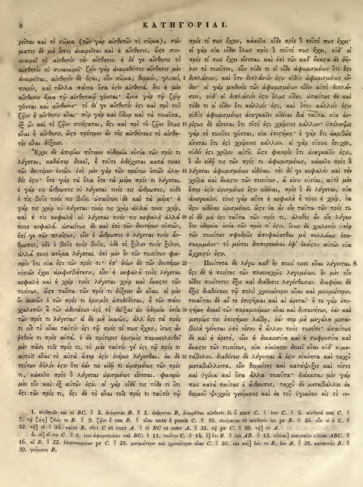

8a
| 1 | ρεῖται καὶ τὸ σῶμα (τῶν γὰρ αἰσθητῶν τὸ σῶμα), σώ- | 0.95 |
|---|---|---|
| 2 | ματος δὲ μὴ ὄντος ἀναιρεῖται καὶ ἡ αἴσθησις, ὥστε συν- | 0.95 |
| 3 | αναιρεῖ τὸ αἰσθητὸν τὴν αἴσθησιν. ἡ δέ γε αἴσθησις τὸ | 0.95 |
| 4 | αἰσθητὸν οὐ συναναιρεῖ· ζῴου γὰρ ἀναιρεθέντος αἴσθησις μὲν | 0.95 |
| 5 | ἀναιρεῖται, αἰσθητὸν δὲ ἔσται, οἷον σῶμα, θερμόν, γλυκύ, | 0.95 |
| 6 | πικρόν, καὶ τἆλλα πάντα ὅσα ἐστὶν αἰσθητά. ἔτι ἡ μὲν | 0.95 |
| 7 | αἴσθησις ἅμα τῷ αἰσθητικῷ γίνεται· ἅμα γὰρ τῷ ζῴῳ | 0.95 |
| 8 | γίνεται καὶ αἴσθησις· τὸ δέ γε αἰσθητὸν ἔστι καὶ πρὸ τοῦ | 0.95 |
| 9 | ζῷον ἢ αἴσθησιν εἶναι· πῦρ γὰρ καὶ ὕδωρ καὶ τὰ τοιαῦτα, | 0.95 |
| 10 | ἐξ ὧν καὶ τὸ ζῷον συνίσταται, ἔστι καὶ πρὸ τὸ ζῷον ὅλως | 0.95 |
| 11 | εἶναι ἢ αἴσθησιν, ὥστε πρότερον ἂν τῆς αἰσθήσεως τὸ αἰσθη- | 0.95 |
| 12 | τὸν εἶναι δόξειεν. | 0.95 |
| 13 | Ἔχει δὲ ἀπορίαν πότερον οὐδεμία οὐσία τῶν πρός τι | 0.95 |
| 14 | λέγεται, καθάπερ δοκεῖ, ἢ τοῦτο ἐνδέχεται κατά τινας | 0.95 |
| 15 | τῶν δευτέρων οὐσιῶν. ἐπὶ μὲν γὰρ τῶν πρώτων οὐσιῶν ἀλη- | 0.95 |
| 16 | θές ἐστιν· οὔτε γὰρ τὰ ὅλα οὔτε τὰ μέρη πρός τι λέγεται. | 0.95 |
| 17 | ὁ γάρ τις ἄνθρωπος οὐ λέγεται τινὸς τις ἄνθρωπος, οὐδὲ | 0.95 |
| 18 | ὁ τὶς βοῦς τινὸς τις βοῦς. ὡσαύτως δὲ καὶ τὰ μέρη· ἡ | 0.95 |
| 19 | γάρ τις χεὶρ οὐ λέγεται τινὸς τις χεὶρ ἀλλά τινος χείρ, | 0.95 |
| 20 | καὶ ἡ τὶς κεφαλὴ οὐ λέγεται τινὸς τις κεφαλὴ ἀλλά | 0.95 |
| 21 | τινος κεφαλή. ὡσαύτως δὲ καὶ ἐπὶ τῶν δευτέρων οὐσιῶν, | 0.95 |
| 22 | ἐπί γε τῶν πλείσων, οἷον ὁ ἄνθρωπος οὐ λέγεται τινὸς ἄν- | 0.95 |
| 23 | θρωπος, οὐδὲ ὁ βοῦς τινὸς βοῦς, οὐδὲ τὸ ξύλον τινὸς ξύλον, | 0.95 |
| 24 | ἀλλά τινος κτῆμα λέγεται. ἐπὶ μὲν οὖν τῶν τοιούτων φα- | 0.95 |
| 25 | νερὸν ὅτι οὐκ ἔστι τῶν πρός τι· ἐπ' ἐνίων δὲ τῶν δευτέρων | 0.95 |
| 26 | οὐσιῶν ἔχει ἀμφισβήτησιν, οἷον ἡ κεφαλὴ τινὸς λέγεται | 0.95 |
| 27 | κεφαλὴ καὶ ἡ χεὶρ τινὸς λέγεται χεὶρ καὶ ἕκαστον τῶν | 0.95 |
| 28 | τοιούτων, ὥστε ταῦτα τῶν πρός τι δόξειεν ἂν εἶναι. εἰ μὲν | 0.95 |
| 29 | οὖν ἱκανῶς ὁ τῶν πρός τι ὁρισμὸς ἀποδέδοται, ἢ τῶν πάνυ | 0.95 |
| 30 | χαλεπῶν ἢ τῶν ἀδυνάτων ἐστὶ τὸ δεῖξαι ὡς οὐδεμία οὐσία | 0.95 |
| 31 | τῶν πρός τι λέγεται· εἰ δὲ μὴ ἱκανῶς, ἀλλ' ἔστι τὰ πρός | 0.95 |
| 32 | τι οἷς τὸ εἶναι ταὐτόν ἐστι τῷ πρός τί πως ἔχειν, ἴσως ἂν | 0.95 |
| 33 | ῥηθείη τι πρὸς αὐτά. ὁ δὲ πρότερος ὁρισμὸς παρακολουθεῖ | 0.95 |
| 34 | μὲν πᾶσι τοῖς πρός τι, οὐ μὴν ταὐτόν γέ ἐστι τῷ πρός τι | 0.95 |
| 35 | αὐτοῖς εἶναι τὸ αὐτὰ ἅπερ ἐστὶν ἑτέρων λέγεσθαι. ἐκ δὲ | 0.95 |
| 36 | τούτων δῆλόν ἐστιν ὅτι ἐάν τις εἰδῇ τι ὡρισμένως τῶν πρός | 0.95 |
| 37 | τι, κἀκεῖνο πρὸς ὃ λέγεται ὡρισμένως εἴσεται. φανερὸν | 0.95 |
| 38 | μὲν οὖν καὶ ἐξ αὐτῶν ἐστιν. εἰ γὰρ οἶδέ τις τόδε τι ὅτι | 0.95 |
| 39 | ἐστι τῶν πρός τι, ἔστι δὲ τὸ εἶναι τοῖς πρός τι ταὐτὸν τῷ | 0.95 |
8b
| 1 | πρός τί πως ἔχειν, κἀκεῖνο οἶδε πρὸς ὃ τοῦτό πως ἔχει· | 0.95 |
|---|---|---|
| 2 | εἰ γὰρ οὐκ οἶδεν ὅλως πρὸς ὃ τοῦτά πως ἔχει, οὐδ’ εἰ | 0.95 |
| 3 | τὸ πρός τί πως ἔχει εἴσεται. καὶ ἐπὶ τῶν καθ’ <choice><sic>ἕκαςα</sic><corr>ἕκαστα</corr></choice> δὲ δῆ- | 0.95 |
| 4 | λον τὸ τοιοῦτον, οἷον τόδε τι εἰ οἶδε ἀφωρισμένως ὅτι ἔστι | 0.95 |
| 5 | διπλάσιον, καὶ ὅτι <choice><sic>διπλασιόν</sic><corr>διπλάσιον</corr></choice> <choice><sic>ἐςιν</sic><corr>ἐστιν</corr></choice> εὐθὺς ἀφωρισμένως οἶ- | 0.95 |
| 6 | δεν· εἰ γὰρ μηδενὸς τῶν ἀφωρισμένων οἶδεν αὐτὸ διπλά- | 0.95 |
| 7 | σιον, οὐδ’ εἰ <choice><sic>διπλασιόν</sic><corr>διπλάσιον</corr></choice> <choice><sic>ἐςιν</sic><corr>ἐστιν</corr></choice> ὅλως οἶδεν. ὡσαύτως δὲ καὶ | 0.95 |
| 8 | τόδε τι εἰ οἶδεν ὅτι κάλλιόν <choice><sic>ἐςι</sic><corr>ἐστι</corr></choice>, καὶ ὅτου κάλλιόν <choice><sic>ἐςιν</sic><corr>ἐστιν</corr></choice> | 0.95 |
| 9 | εὐθὺς ἀφωρισμένως ἀναγκαῖον εἰδέναι διὰ ταῦτα. οὐκ ἀο- | 0.95 |
| 10 | <choice><sic>ρίςως</sic><corr>ρίστως</corr></choice> δὲ εἴσεται ὅτι τοῦτό <choice><sic>ἐςι</sic><corr>ἐστι</corr></choice> χεῖρον κάλλιον· ὑπόληψις | 0.95 |
| 11 | γὰρ τὸ τοιοῦτο γίνεται, οὐκ ἐπιστήμη· ὁ γὰρ ἔτι ἀκριβῶς | 0.95 |
| 12 | εἴσεται ὅτι <choice><sic>ἐςὶ</sic><corr>ἐστὶ</corr></choice> χεῖρον κάλλιον. εἰ γὰρ οὕτως ἔτυχεν, | 0.95 |
| 13 | οὐδέν <choice><sic>ἐςι</sic><corr>ἐστι</corr></choice> χεῖρον <choice><sic>αὐτῶ</sic><corr>αὐτῷ</corr></choice>. <choice><sic>ὥςε</sic><corr>ὥστε</corr></choice> φανερὸν ὅτι ἀναγκαῖόν <choice><sic>ἐςιν</sic><corr>ἐστιν</corr></choice>, | 0.95 |
| 14 | ὃ ἂν εἰδῇ τις τῶν πρός τι ἀφωρισμένως, κἀκεῖνο πρὸς ὃ | 0.95 |
| 15 | λέγεται ἀφωρισμένως εἰδέναι. τὴν δέ γε κεφαλὴν καὶ τὴν | 0.95 |
| 16 | χεῖρα καὶ ἕκαστον τῶν τοιούτων, ἃ ἐστιν οὐσίαι, αὐτὸ μὲν | 0.95 |
| 17 | ὅπερ <choice><sic>ἐςὶν</sic><corr>ἐστὶν</corr></choice> ὡρισμένως <choice><sic>ἔςιν</sic><corr>ἔστιν</corr></choice> εἰδέναι, πρὸς ὃ δὲ λέγεται, οὐκ | 0.95 |
| 18 | ἀναγκαῖον. τίνος γὰρ αὕτη ἡ κεφαλὴ ἢ τίνος ἡ χείρ, οὐκ | 0.95 |
| 19 | <choice><sic>ἔςιν</sic><corr>ἔστιν</corr></choice> εἰδέναι ὡρισμένως. <choice><sic>ὥςε</sic><corr>ὥστε</corr></choice> οὐκ ἂν εἴη ταῦτα τῶν πρός τι. | 0.95 |
| 20 | εἰ δὲ μή <choice><sic>ἐςι</sic><corr>ἐστι</corr></choice> ταῦτα τῶν πρός τι, ἀληθὲς ἂν εἴη λέγειν | 0.95 |
| 21 | ὅτι οὐδεμία οὐσία τῶν πρός τί <choice><sic>ἐςιν</sic><corr>ἐστιν</corr></choice>. ἴσως δὲ χαλεπὸν ὑπὲρ | 0.95 |
| 22 | τῶν τοιούτων σφοδρῶς ἀποφαίνεσθαι μὴ πολλάκις ἐπε- | 0.95 |
| 23 | σκεμμένον· τὸ μέντοι διηπορηκέναι ἐφ’ <choice><sic>ἑκάςου</sic><corr>ἑκάστου</corr></choice> αὐτῶν οὐκ | 0.95 |
| 24 | ἄχρηστον <choice><sic>ἔςιν</sic><corr>ἔστιν</corr></choice>. | 0.95 |
| 25 | Ποιότητα δὲ λέγω καθ’ ἣν ποιοί τινες εἶναι λέγονται. 8 | 0.95 |
| 26 | ἔστι δὲ ἡ ποιότης τῶν πλεοναχῶς λεγομένων. ἓν μὲν οὖν | 0.95 |
| 27 | εἶδος ποιότητος ἕξις καὶ διάθεσις λεγέσθωσαν. διαφέρει δὲ | 0.95 |
| 28 | ἕξις διαθέσεως τῷ πολὺ χρονιώτερον εἶναι καὶ μονιμώτερον. | 0.95 |
| 29 | τοιαῦται δὲ αἵ τε <choice><sic>ἐπιςῆμαι</sic><corr>ἐπιστῆμαι</corr></choice> καὶ αἱ ἀρεταί· ἥ τε γὰρ ἐπι- | 0.95 |
| 30 | στήμη δοκεῖ τῶν παραμονίμων εἶναι καὶ δυσκινήτων, ἐὰν καὶ | 0.95 |
| 31 | μετρίως τις ἐπιστήμην λάβῃ, ἐὰν περ μὴ μεγάλη μετα- | 0.95 |
| 32 | βολὴ γένηται ὑπὸ νόσου ἤ ἄλλου τινὸς τοιούτου· ὡσαύτως | 0.95 |
| 33 | δὲ καὶ ἡ ἀρετή, οἷον ἡ δικαιοσύνη καὶ ἡ σωφροσύνη καὶ | 0.95 |
| 34 | ἕκαστον τῶν τοιούτων, οὐκ εὐκίνητον δοκεῖ εἶναι οὐδ’ εὐμε- | 0.95 |
| 35 | τάβολον. διαθέσεις δὲ λέγονται ἃ <choice><sic>ἐςιν</sic><corr>ἐστιν</corr></choice> εὐκίνητα καὶ ταχὺ | 0.95 |
| 36 | μεταβάλλοντα, οἷον θερμότης καὶ κατάψυξις καὶ νόσος | 0.95 |
| 37 | καὶ ὑγίεια καὶ ὅσα ἄλλα τοιαῦτα· διάκειται μὲν γάρ | 0.95 |
| 38 | τι πως κατὰ ταύτας ὁ ἄνθρωπος, ταχὺ δὲ μεταβάλλει ἐκ | 0.95 |
| 39 | θερμοῦ ψυχρὸς γενόμενος καὶ ἐκ τοῦ ὑγιαίνειν εἰς τὸ νο- | 0.95 |
Textual apparatus
- n1 [both] 1. αἰσθητὰν καὶ τὸ BC.
- n2 [both] 2. ἀνῄρηται B.
- n3 [both] 5. ἀνῄρηται B, ἀναιρεῖται αἰσθητὸν δὲ ὡς corr C.
- n4 [both] ἔστιν C.
- n5 [both] 6. αἰσθητὰ om C.
- n6 [both] 7. τῷ ζῴῳ] ζῴόν τε B.
- n7 [both] 9. ζῷον ᾗ om B.
- n8 [both] εἶναι ante ᾗ ponit C.
- n9 [both] 10. συνίσταται τὸ αἰσθητόν ἐστι pr B.
- n10 [both] 26. οἷον εἰ ᾗ C.
- n11 [both] 32. τῷ] τὸ
- n12 [both] 34. ταὐτό B, τετὸ C et corr A.
- n13 [both] τὸ BC et corr A.
- n14 [both] 35. τῷ pr C.
- n15 [both] 39. τῷ] τὸ A.
- n16 [both] 4. εἰ] εἴ τις C.
- n17 [both] 8. ἐστιν ἀφωρισμένως καὶ BC.
- n18 [both] 11. τοιοῦτον C.
- n19 [both] 14. ὃ] ὅτι B.
- n20 [both] ἐὰν AB.
- n21 [both] 15. εἰδέναι] ἀναγκαῖον εἰδέναι ABC.
- n22 [both] 16. αἱ B.
- n23 [both] 22. ἐπεσκεμμένων pr C.
- n24 [both] 28. μονιμώτερον καὶ χρονιώτερον εἶναι C.
- n25 [both] 30. ἐὰν καὶ] ἐάν τε B, ἐὰν A.
- n26 [both] 38. καταντὰς B.
- n27 [both] 39. γινόμενος B.
Verifier issues
- error column_b, line 25: The marginal chapter numeral 8 is included in text_grc ('...λέγονται. 8'). Chapter/section numerals must be stored as MarginalMarker records and must not appear in text_grc.
- error column_a, line 10: The scan reads 'πρὸ τοῦ ζῴου'; the extraction has 'πρὸ τὸ ζῷον', omitting the article τοῦ and misreading the genitive.
- error column_b, lines 5 and 7: The scan reads 'διπλάσιον'; the extraction has 'διπλασιόν' (missing the sigma).
- error column_b, line 10: The scan reads 'χεῖρον κάλλιον'; the extraction has 'χεῖρον κάλλιον' but the apparatus indicates 'κάλλιον' should be 'κάλλιον' (no issue) — however the apparatus note n12 reads 'τετὸ C' which is a misreading of 'ταὐτὸ C'.
- error column_b, line 13: The scan reads 'αὐτῶ' (dative); the extraction has 'αὐτῶ' which is correct, but the apparatus note n12 'τετὸ C' is a misreading of 'ταὐτὸ C'.
- error column_b, line 38: The scan reads 'κατὰ ταύτας'; the extraction has 'κατὰ ταύτας' but the apparatus note n26 reads 'καταντὰς B' which is a misreading of 'κατὰ ταύτας B'.
- error column_b, line 39: The scan reads 'γενόμενος'; the extraction has 'γενόμενος' but the apparatus note n27 reads 'γινόμενος B' which is a misreading of 'γενόμενος B'.
- warning 8b3: possible gutter-copy artifact; column A ends and column B begins with
τὸ.
Encoded TEI corrections (24)
- b5: <choice><sic>διπλασιόν</sic><corr>διπλάσιον</corr></choice> (0.90) — The scan clearly shows the acute accent on the antepenultimate syllable: διπλάσιον. The extraction's 'διπλασιόν' is incorrect.
- b7: <choice><sic>διπλασιόν</sic><corr>διπλάσιον</corr></choice> (0.90) — The scan shows the accent on the antepenultimate syllable: διπλάσιον. The extraction's 'διπλασιόν' is incorrect.
- b13: <choice><sic>αὐτῶ</sic><corr>αὐτῷ</corr></choice> (0.90) — The scan shows the dative form with iota subscript: αὐτῷ. The extraction's 'αὐτῶ' is incorrect.
- b3: <choice><sic>ἕκαςα</sic><corr>ἕκαστα</corr></choice> (1.00) — Aligned Hathi στ-ligature OCR correction: deterministic repair of the Hathi internal final sigma agrees with the scan and reference crop.
- b5: <choice><sic>ἐςιν</sic><corr>ἐστιν</corr></choice> (1.00) — Aligned Hathi στ-ligature OCR correction: deterministic repair of the Hathi internal final sigma agrees with the scan and reference crop.
- b7: <choice><sic>ἐςιν</sic><corr>ἐστιν</corr></choice> (1.00) — Aligned Hathi στ-ligature OCR correction: deterministic repair of the Hathi internal final sigma agrees with the scan and reference crop.
- b8: <choice><sic>ἐςι</sic><corr>ἐστι</corr></choice> (1.00) — Aligned Hathi στ-ligature OCR correction: deterministic repair of the Hathi internal final sigma agrees with the scan and reference crop.
- b8: <choice><sic>ἐςιν</sic><corr>ἐστιν</corr></choice> (1.00) — Aligned Hathi στ-ligature OCR correction: deterministic repair of the Hathi internal final sigma agrees with the scan and reference crop.
- b10: <choice><sic>ρίςως</sic><corr>ρίστως</corr></choice> (1.00) — Aligned Hathi στ-ligature OCR correction: deterministic repair of the Hathi internal final sigma agrees with the scan and reference crop.
- b10: <choice><sic>ἐςι</sic><corr>ἐστι</corr></choice> (1.00) — Aligned Hathi στ-ligature OCR correction: deterministic repair of the Hathi internal final sigma agrees with the scan and reference crop.
- b12: <choice><sic>ἐςὶ</sic><corr>ἐστὶ</corr></choice> (1.00) — Aligned Hathi στ-ligature OCR correction: deterministic repair of the Hathi internal final sigma agrees with the scan and reference crop.
- b13: <choice><sic>ἐςι</sic><corr>ἐστι</corr></choice> (1.00) — Aligned Hathi στ-ligature OCR correction: deterministic repair of the Hathi internal final sigma agrees with the scan and reference crop.
- b13: <choice><sic>ὥςε</sic><corr>ὥστε</corr></choice> (1.00) — Aligned Hathi στ-ligature OCR correction: deterministic repair of the Hathi internal final sigma agrees with the scan and reference crop.
- b13: <choice><sic>ἐςιν</sic><corr>ἐστιν</corr></choice> (1.00) — Aligned Hathi στ-ligature OCR correction: deterministic repair of the Hathi internal final sigma agrees with the scan and reference crop.
- b17: <choice><sic>ἐςὶν</sic><corr>ἐστὶν</corr></choice> (1.00) — Aligned Hathi στ-ligature OCR correction: deterministic repair of the Hathi internal final sigma agrees with the scan and reference crop.
- b17: <choice><sic>ἔςιν</sic><corr>ἔστιν</corr></choice> (1.00) — Aligned Hathi στ-ligature OCR correction: deterministic repair of the Hathi internal final sigma agrees with the scan and reference crop.
- b19: <choice><sic>ἔςιν</sic><corr>ἔστιν</corr></choice> (1.00) — Aligned Hathi στ-ligature OCR correction: deterministic repair of the Hathi internal final sigma agrees with the scan and reference crop.
- b19: <choice><sic>ὥςε</sic><corr>ὥστε</corr></choice> (1.00) — Aligned Hathi στ-ligature OCR correction: deterministic repair of the Hathi internal final sigma agrees with the scan and reference crop.
- b20: <choice><sic>ἐςι</sic><corr>ἐστι</corr></choice> (1.00) — Aligned Hathi στ-ligature OCR correction: deterministic repair of the Hathi internal final sigma agrees with the scan and reference crop.
- b21: <choice><sic>ἐςιν</sic><corr>ἐστιν</corr></choice> (1.00) — Aligned Hathi στ-ligature OCR correction: deterministic repair of the Hathi internal final sigma agrees with the scan and reference crop.
- b23: <choice><sic>ἑκάςου</sic><corr>ἑκάστου</corr></choice> (1.00) — Aligned Hathi στ-ligature OCR correction: deterministic repair of the Hathi internal final sigma agrees with the scan and reference crop.
- b24: <choice><sic>ἔςιν</sic><corr>ἔστιν</corr></choice> (1.00) — Aligned Hathi στ-ligature OCR correction: deterministic repair of the Hathi internal final sigma agrees with the scan and reference crop.
- b29: <choice><sic>ἐπιςῆμαι</sic><corr>ἐπιστῆμαι</corr></choice> (1.00) — Aligned Hathi στ-ligature OCR correction: deterministic repair of the Hathi internal final sigma agrees with the scan and reference crop.
- b35: <choice><sic>ἐςιν</sic><corr>ἐστιν</corr></choice> (1.00) — Aligned Hathi στ-ligature OCR correction: deterministic repair of the Hathi internal final sigma agrees with the scan and reference crop.